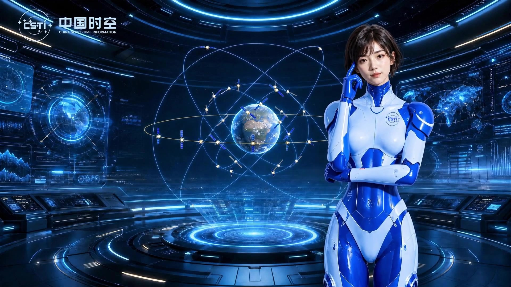
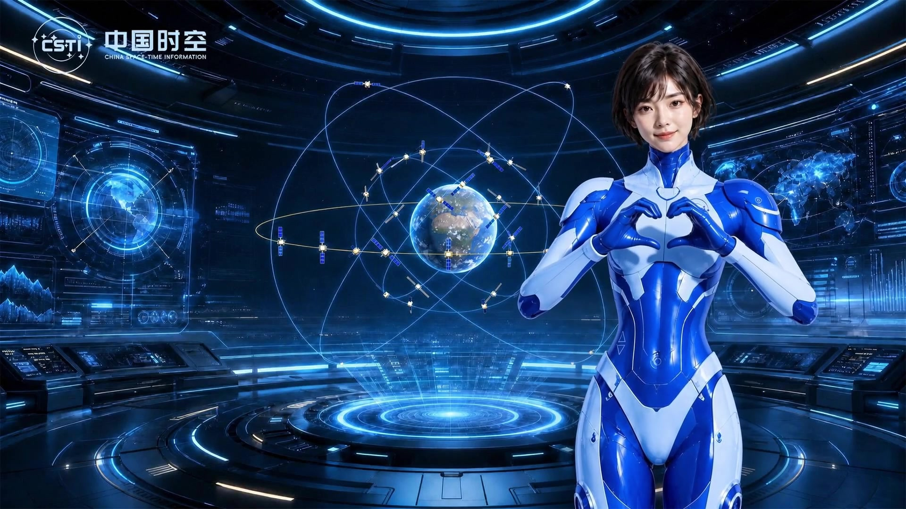

01 / Research品牌研究与方向定位
用大模型批量梳理中国时空集团的品牌调性、核心业务关键词，分析同类科技央企数字人设计的最佳实践，同时汇总用户对数字人形象、交互体验的偏好调研数据，输出明确的设计方向定位。
品牌调性业务关键词用户偏好
中国时空集团
Digital human
Brand presence
项目背景
A new voice for a technology brand
这个项目是为国家级时空信息服务主体中国时空集团打造专属数字人形象，用于企业业务介绍、品牌宣传、信息讲解、智能交互等场景。
服务人群包含企业客户、合作伙伴、时空信息产业关注用户，以及展会、内部宣传场景的访问用户。
过往企业采用传统图文形式做品牌宣传，存在信息传递效率低、科技属性感知弱、用户交互体验生硬的问题。
业务和公司的诉求是通过数字人提升品牌传播效率30%以上，强化企业科技品牌形象，提升用户交互体验满意度。
专业科技属性 × 交互亲和力
企业业务介绍
品牌宣传
信息讲解
智能交互
制作思路
From identity to interaction

01 / Research用大模型批量梳理中国时空集团的品牌调性、核心业务关键词，分析同类科技央企数字人设计的最佳实践，同时汇总用户对数字人形象、交互体验的偏好调研数据，输出明确的设计方向定位。
将品牌视觉要求、业务元素关键词输入Banana Pro等AI生成工具，快速批量生成不同风格的数字人形象方案，筛选出符合要求的方向后快速迭代调整。
同时用Seedance 2.0 AI工具生成动态动作和背景效果，快速验证不同方案的交互表现。

03 / Refine用AI生成动作库的基础素材，设计师再对动作幅度、视觉细节做精细调整，用剪映完成最终的效果优化，输出可直接落地的全量数字人素材。
上方视觉展示采用最终形象及动作素材。
形象方案探索
探索不同造型、配色与人物气质，最终选定蓝白数字人形象。
最终效果展示
品牌形象与业务元素的统一表达
核心业务元素的视觉关联，
在人物、装甲和空间中保持一致。
数字人动作体系
A language of gestures A sense of connection
针对不同交互场景设计对应动作，抱胸动作匹配思考、等待状态，比心动作匹配友好互动场景，打招呼动作匹配用户进入的欢迎场景，点头、加油动作匹配认可鼓励场景。
覆盖所有日常交互的反馈需求，让数字人的表达更符合真人交流逻辑。
不同动作匹配对应的情绪表达，比如比心、打招呼动作强化亲和力，降低用户和科技产品交流的距离感。
抱胸、思索动作让数字人在等待时更自然，避免僵硬的站立状态带来的生硬感。
让动作承接情绪，
让交流更接近真人。
通过Seedance 2.0等AI动效工具生成动作的基础动态，再调整动作的幅度和节奏，适配不同展示场景的需求，让动作更自然流畅，提升交互的沉浸感。
全量动作素材
A language of gestures
选择下方动作，观看数字人的动态表达。
友好互动
比心强化亲和力，降低用户与科技产品交流的距离感。
欢迎 / 交流 / 反馈 / 等待
设计复盘
From a digital identity to a reusable design approach
科技类央企数字人设计需要平衡专业科技属性和交互亲和力，结合核心业务元素做视觉关联，可有效提升30%以上的用户品牌认知度。
所有ToB科技企业的数字人、虚拟形象设计。
制作方法
AI全链路工具辅助数字人从形象生成到动作落地，可缩短50%以上的设计周期，同时大幅提升方案的探索丰富度。
从品牌语言，找到数字人的视觉方向。
品牌调性
专业科技属性核心业务
北斗 · 时空信息用户偏好
自然表达 · 交互亲和力梳理品牌调性与核心业务关键词，分析同类科技央企数字人的设计实践，结合用户对形象和交互的偏好，明确设计方向。
品牌关键词、用户偏好与设计方向定位。
输入品牌视觉要求与业务元素关键词，批量探索不同风格的数字人方案，筛选符合要求的方向，再快速迭代细节。
符合品牌调性的数字人形象与最终视觉方案。
所有数字人、虚拟形象设计项目。
交互设计
数字人动作设计要覆盖全交互场景，匹配不同用户语境的反馈需求，可提升25%以上的用户交互满意度。
所有具备智能交互功能的虚拟数字人项目。
悬停预览，点击查看完整动作。